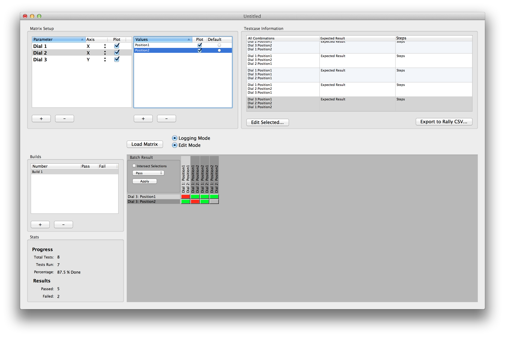

Matrix Master
Abstract
Matrix Master™ is intended to be a software testing utility, although it is applicable to many other workflows. If you have ever found yourself trying to test a method, function, algorithm, etc., only to realize 15 iterations into it that the possible combinations of input are vast (if not infinte), then Matrix Master may be of some help to you. Literally speaking, it takes a a list of parameters, each with an associated list of possible values, and creates a dynamic grid (the 'Matrix') of possible outcomes. The grid allows you to associate results with each possible outcome.Matrix Master assumes the following thesis:
A testcase is a repeatable set of steps with a fixed set of possible parameters,
each with a variable (and potentially infinte) number of possible values.
You may not agree with this definition of a testcase, but Matrix Master is modeled on this idea. If you absolutely cannot frame testcases in this way, Matrix Master may not be for you.
Simple Example/Use Case
Let's say you have a function that takes 2 parameters: A string and a boolean. Looked at one way, we have "two" different possible inputs:- Some string + TRUE
- Some string + FALSE
- Strings with less than 10 characters
- Strings with a capital letter
- An integer value wrapped in a string
- String Length < 10 + Contains Capital + String is integer + Original Boolean
If you can break down your testcases this way, Matrix Master may be of some help.
Usage/UI
UI Overview
The UI will be based on a Native OS X version of the application that I created many years. I want to take this opportunity to port the main functionality to a web-based application, and also to refine some of the implementations in the OS X version. Here's a screen grab of the OS X Version:  The main UI will consist of the following primary elements:- A list of Testcases, with Add/Remove buttons
- A list of Parameters, which will be related to the selected Testcase.
- A list of Values, which will be related to the selected Parameter
- A "Matrix" of all plotted combinations

Testcases
A 1 column table view that will add hold a list testcase names. You can add and remove testcases.
Parameters
A 3 column table view that will hold parameters associated with a testcase. To manager parameters, selecte a testcase from the Testcase list. The columns in the parameter table:- Name - the name of the paramter
- Plot (not shown) - a checkbox to decide whether to plot the paramter in the Matrix
- Axis - The axis (x/y) on which to plot the parameter

Values
A 2 column table view that will hold values associated with a parameter. To manage values, select a parameter from the Parameter list. The columns in the value table:- Name - the name of the value
- Plot (not shown) - a checkbox to decide whether to plot the paramter in the Matrix

The Matrix
A dynamic grid that will display a "cell" for each plotted testcase combination. Each cell will have a descriptive label (likey a number or a short text description). The grid will have two modes of use, RESULTS mode (which allows you to log and view testing results easily) and EDIT mode (which allows you to edit details about each cell):RESULTS Mode
- Clicking the cell will toggle between three statues, indicated by color: PASS (Green), FAIL (Red), UNTESTED (Gray)
EDIT Mode
- Clicking on single cell will select that cell.
- Right-Clicking on a cell will display a menu to "Select Row" or "Select Column". Choosing one will "Select" the given row or column.
- There will be a checkbox next to the grid to "intersect selections", so that row/column selection results will be the "intersection" of the selected rows and columns. This will allow for selection control over large areas of testcases.
- Right-Clicking on cell will display an option to "Edit Selected Cells", which will display a form to update the Description and Expected Result of all selected cells
- Option-Clicking on a selected cell will remove that cell from the selection
In EITHER mode, hovering over the cell will display a help/heads-up style display with the Parameter Values, Description and Expected Result of that cell

Usage
Once a Matrix is plotted, the basic idea is to perform the associated testcases, and log the result. As you log results, the high level ratio of Red to Green can be useful in getting a feel for how well testing is going.Other Inspiration
As stated earlier, this will largely be a port of a similiar application I worked on for the Mac OS, albeit a subset of the features in that application. I'm not really familiar with any applications that do exactly the same thing (although I'm sure there are some!), so it's not really modeled after anything specfically. In general, it's probably most inspired by an application like MS Excel, which is a super-hyped up grid - this is an attempt to do something very specialized in a similar grid-like environment. One thing I do want to emulate is a cool flipping animation as results are logged, similar to something I've seen in a game called Animatch that my daughter plays:Animatch